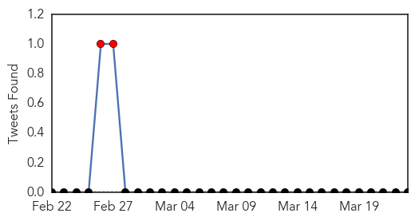

Swine Flu
30-Day Web Trend
0 alerts, 4 warnings

30-Day Twitter Trend
2 alerts, 0 warnings

Article Locations

Article Confidences

Top Articles:
- 1.000
- Health minister denies swine flu outbreak amid 19 deaths in 6 day
- 1.000
- Swine flu kills 30 in Turkey, minister assuages concerns
- 0.999
- 39 dead from influenza, Turkish health minister says
- 0.998
- 30 people died from swine flu since 2014
- 0.995
- Sun burns swine flu cloud
- 0.993
- Six fresh swine flu cases in Bengal
- 0.991
- Turkey rules out swine flu outbreak despite rising death toll
- 0.984
- Six fresh swine flu cases in Bengal
- 0.983
- Barriers to managing TB in emergency departments
- 0.981
- Six fresh swine flu cases in Bengal
- 0.980
- Health minister denies swine flu outbreak amid 19 deaths in 6 days
- 0.980
- CPI(M) demands urgent steps to tackle swine flu on war footing
- 0.957
- Swine flu claims fourth victim in state
- 0.924
- Vietnam reports outbreak of avian H1N1 flu among human - Xinhua
- 0.840
- Maharashtra to formulate legislation to curb swine flu-like epidemics
Top Tweets:
-
No tweets found for Mar 23, 2015
Cholera
30-Day Web Trend
30-Day Twitter Trend
1 alerts, 0 warnings

Article Locations
Article Confidences

Top Articles:
- 1.000
- Roundup: Cholera under control as Harare remains on high alert
- 1.000
- Cholera under control as Harare remains on high alert - Xinhua
- 0.987
- Southern Africa Weekly Report Map (17th to 23rd March 2015) - Malawi
- 0.982
- Ugandan hospital turns down DRC Cholera patients
- 0.929
- Malawi: Southern Africa Weekly Report Map (17th to 23rd March 2015)
- 0.864
- Life-saving water, sanitation and hygiene supplies reaching children affected by Cyclone Pam
- 0.691
- Clean water for all Filipinos
Top Tweets:
-
No tweets found for Mar 23, 2015